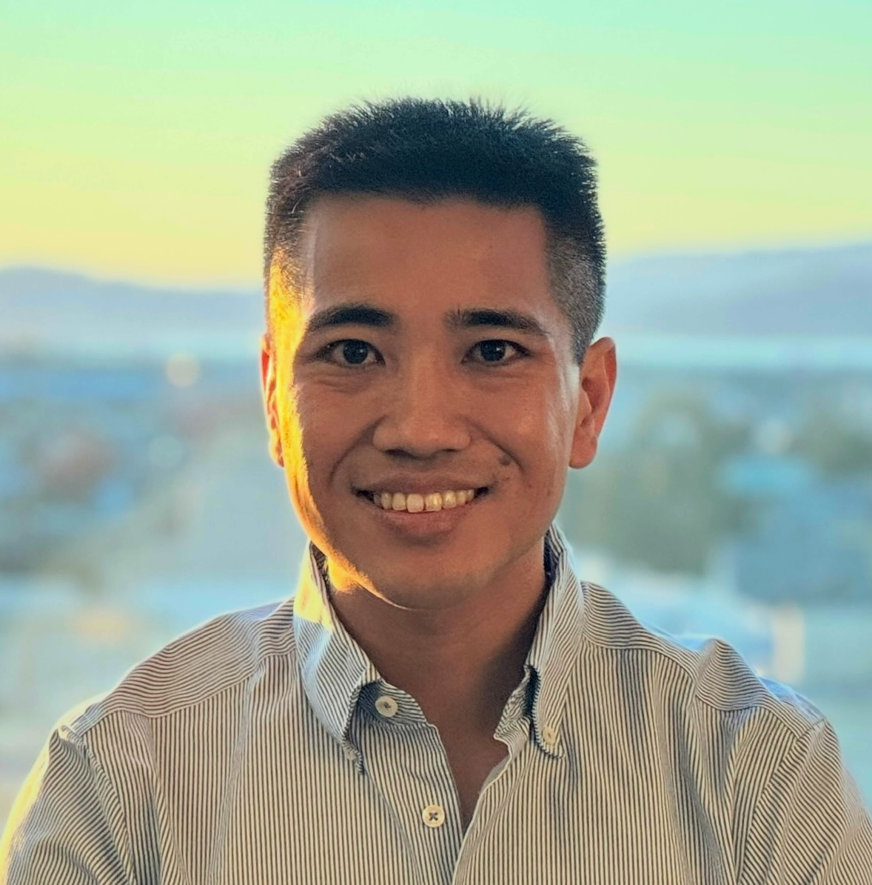

Yume Hoshijima

I’m Yume (pronounced “you may”). I’m an attorney in San Francisco who represents state and local governments in high-stakes litigation against private corporations that caused environmental, natural resources, and climate harm.I was born in Japan and grew up in San Diego, where I benefited from strong public schools, worked as a surf camp counselor, and was represented by the local ACLU in a successful political speech lawsuit.
I moved east to attend Yale (BA 2015), then stayed there for law and graduate school (JD/MEM 2019). Then, I clerked for two federal judges before entering legal practice.
In my spare time, I spend lots of time outdoors: I’m training for a 70.3 triathlon, and I explore the Bay Area’s numerous parks. I’m a news junkie who prizes and hoards interesting and occasionally useful information. If not for my belief that today’s grave environmental problems require legal responses, I would have been an engineer: I’m fascinated by complicated machines, civil infrastructure, and technology in general.
I believe that the rule of law is of paramount importance and that attorneys have a sacrosanct obligation to uphold the quality of justice, especially given the Trump Administration’s corruption and flagrant disregard for American democratic values. Attorneys have a special duty to stand up for members of minority groups who have been the first to be targeted with abuses of power.
Please don’t hesitate to get in touch at yume.hoshijima [at] aya.yale.edu.